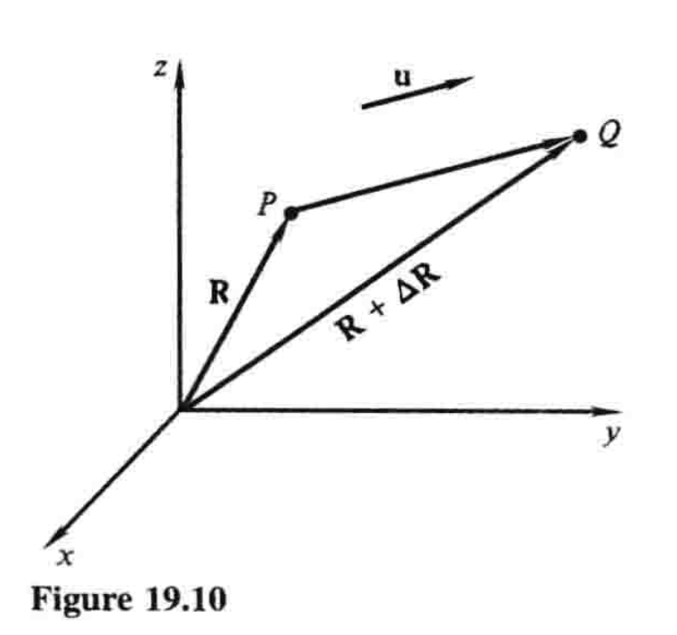
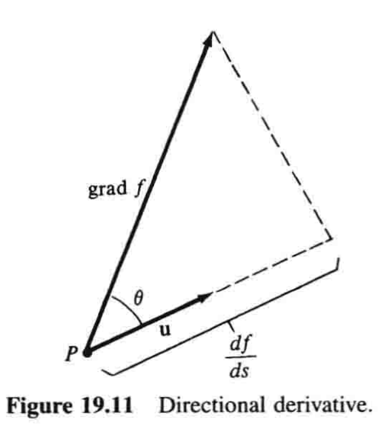
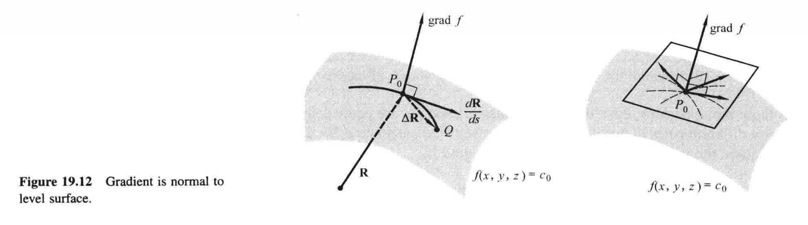

19.5 方向导数和梯度¶
\(\DeclareMathOperator{\grad}{grad}\)
设\(f(x,y,z)\)为定义在三维空间中某区域内的函数（三个变量！），并设\(P\)为该区域内一点. 当我们让\(P\)沿着某个特定方向移动时，\(f\)的变化率是多少？当沿着\(x\)、\(y\)和\(z\)轴正方向时，我们知道\(f\)的变化率是偏导数\(\partial f/\partial x\)、\(\partial f/\partial y\)和\(\partial f/\partial z\). 但是如果我们让\(P\)沿着非坐标轴方向移动，又该如何计算\(f\)的变化率？在对这个问题的分析中，我们将会遇到一个极为重要的概念——函数的梯度.
设我们研究的点\(P\)有坐标\(x\)、\(y\)和\(z\)，所以\(P=(x,y,z)\)；设\(\mathbf{R}=x\mathbf{i}+y\mathbf{j}+z\mathbf{k}\)是\(P\)的位置向量，并用单位向量\(\mathbf{u}\)给出一个特定的方向，如图19.101. 如果我们把\(P\)沿着这个方向移到\(Q=(x+\Delta x,y+\Delta y,z+\Delta z)\)，那么函数\(f\)就有变化量\(\Delta f\). 如果我们现在用\(P\)和\(Q\)之间的距离\(\Delta s=|\Delta \mathbf{R}|\)来除这个变化量\(\Delta f\)，那么商\(\Delta f/\Delta s\)就是当我们把\(P\)移到\(Q\)时\(f\)（关于距离）的平均变化率. 例如，如果\(f\)在\(P\)的值是这一点的温度，那么\(\Delta f/\Delta s\)就是沿着线段\(PQ\)温度的平均变化率. 当\(Q\)趋近于\(P\)时的极限，即所谓的
就称为\(f\)在点\(P\)处沿方向\(\mathbf{u}\)的导数，简称\(f\)的方向导数. 以温度函数为例，\(df/ds\)表示当我们将\(P\)沿\(\mathbf{u}\)确定的方向移动时，温度关于距离的瞬时变化率——说直白点就是它热得有多快.

一切都非常好，但是在给定情形下，我们怎么才能实际计算出\(df/ds\)呢？为了探索其做法，我们假设\(f(x,y,z)\)有关于\(x\)、\(y\)和\(z\)的连续偏导数. 为了避免重复这个冗长单调的假设，如无特别说明，不妨把它作为所讨论的每个函数的基本设定. 此时，基本引理就使得我们可以用这种形式写出\(\Delta f\)：
当\(\Delta x\)、\(\Delta y\)和\(\Delta z\to 0\)也即\(\Delta s \to 0\)时，\(\epsilon_1, \epsilon_2, \epsilon_3 \to 0\). 用\(\Delta s\)除\((1)\)就有
随后取\(\Delta s\to 0\)时的极限，我们看到末尾三项趋于零，于是我们就得到方程
这个方程应该理解为一种特殊的链式法则，当我们沿着过\(P\)且与\(\mathbf{u}\)平行的直线移动时，\(f\)是\(x\)、\(y\)和\(z\)的函数，而\(x\)、\(y\)和\(z\)又分别是距离\(s\)的函数，故\((3)\)就展示了如何关于\(s\)对\(f\)微分. 2
我们注意到，\((3)\)右端每个乘积中的第一个因子，只依赖于函数\(f\)以及计算\(f\)的偏导数时所取点\(P\)的坐标，而每个乘积中的第二个因子是关于\(f\)独立的，且仅依赖于计算\(df/ds\)时的方向. 这些事实表明，\((3)\)的右边应该被看作——并且被写成——两个向量的点积，如下：
这里第一个因子是一个向量，称为\(f\)的梯度，符号记作\(\grad f\)3. 因此根据定义
有了这个记号，\((4)\)就可以写成
但是我们知道，\(d\mathbf{R}/ds\)是一个单位向量，又因为它和\(\mathbf{u}\)方向相同，所以它和\(\mathbf{u}\)相等. 故式\((6)\)就等价于
这告诉我们怎样计算\(df/ds\)，因为\((5)\)对于给定的函数\(f\)大概率是很好算的，随后求出给定点\(P\)处的值，接着两个位置向量的点积\((7)\)就很容易求.
对于给定函数\(f\)和给定点\(P\)，\(\grad f\)是一个可以平移的已知向量4，不妨将其尾部移到\(P\). 我们也把\(\mathbf{u}\)的尾部移到\(P\)，如图19.11所示. 为理解\(\grad f\)的重要性，我们利用点积的定义，以及\(\mathbf{u}\)是单位向量的事实，将\((7)\)写成如下形式：

其中\(\theta\)是\(\grad f\)和\(\mathbf{u}\)之间的夹角. 由于\(\mathbf{u}\)的方向可以根据我们的需要来选择，从\((8)\)立即可得梯度的第一个基本性质：
性质1
任意给定方向的方向导数\(df/ds\)就是\(\grad f\)在那个方向上的标量投影（如图19.11）.
从这个意义上说，单个向量\(\grad f\)本身包含了函数\(f\)在点\(P\)处沿所有可能方向的方向导数信息. 5
接着，如果选定的\(\mathbf{u}\)指向与\(\grad f\)相同的方向，那么\(\theta = 0\)，\(\cos \theta = 1\)，此时由\((8)\)可知\(df/ds\)取得最大值，即在这个方向上\(f\)增长最快. 而且，这个最大值等于\(|\grad f|\). 以上讨论给出了下面两个梯度的性质：
性质2
向量\(\grad f\)指向\(f\)增长最快的方向.
性质3
向量\(\grad f\)的长度就是\(f\)的最快增速.
上述性质表明，虽然式\((7)\)和式\((8)\)是等价的，但是它们在我们思考时扮演完全不同的角色，因为我们用\((7)\)来计算\(df/ds\)，用\((8)\)来理解向量\(\grad f\)的直观意义.
例1 若\(f(x,y,z)=x^2-y+z^2\)，求点\((1,2,1)\)处在向量\(4\mathbf{i}-2\mathbf{j}+4\mathbf{k}\)方向的方向导数\(df/ds\).
解 在点\((1,2,1)\)处，我们有\(\grad f=2x\mathbf{i}-\mathbf{j}+2z\mathbf{k}=2\mathbf{i}-\mathbf{j}+2\mathbf{k}\). 通过将给定的向量除以它的长度，我们得到一个所需方向的单位向量\(\mathbf{u}\)：
现由式\((7)\)可得：
因此，当我们从\((1,2,1)\)向指定方向移动时，函数\(f\)在每个单位距离上以\(3\)个单位的速度增长.
例2 空气中每一点的温度由函数\(f(x,y,z)=x^2-y+z^2\)给出. 一只位于\((1,2,1)\)的蚊子想尽快到凉爽的地方去. 它应该往何方向飞？
解 例1中我们已经知道，点\((1,2,1)\)处\(\grad f=2\mathbf{i}-\mathbf{j}+2\mathbf{k}\). 因为\(\grad f\)的方向是温度增长最快的方向，所以蚊子应该往它的反方向飞，即\(-\grad f=-2\mathbf{i}+\mathbf{j}-2\mathbf{k}\).
第四个基本性质在几何上很有用. 为解释它，我们记所讨论的点为\(P_0=(x_0,y_0,z_0)\)，以此强调在讨论中它是个定点，同时记\(c_0\)为我们的函数\(f\)在\(P_0\)处的值. 使得\(f(x,y,z)\)的值为\(c_0\)的所有点的集合，一般而言就形成了一个过\(P_0\)的等值面，其方程为\(f(x,y,z)=c_0\). 我们想说明的是，在\(P_0\)处，向量\(\grad f\)垂直于这个等值面，如图19.12所示. 为此，我们考虑曲面上过\(P_0\)的一条曲线. 如果我们移动到曲线上邻近的一点\(Q\)，并沿着曲线计量\(s\)，那么\(\Delta f=0\)，因为\(f\)在这个曲面上每个点的值都相同；进而在\(P_0\)处，在曲线的切线方向上，\(df/ds=0\). 式\((6)\)依然成立，并表明
其中\(d\mathbf{R}/ds\)就是在\(P_0\)处曲线的单位切向量. \((9)\)中点积为零告诉我们，\(\grad f\)是垂直于这个切向量的. 而且，同样的推理对曲面上任何过\(P_0\)的曲线都成立，所以\(\grad f\)与这些曲线的切向量都垂直. 又因为这些切向量决定了\(P_0\)处的切平面，而与曲面垂直也就是与这个切平面垂直，遂有：
性质4
函数\(f(x,y,z)\)在点\(P_0\)处的梯度垂直于\(f\)的过\(P_0\)的等值面.

接着刚才的讨论，我们指出，任何曲面的方程都可以写成\(f(x,y,z)=c_0\)的形式，从而可以被看作函数\(f(x,y,z)\)的一个等值面. 6若\(P_0=(x_0,y_0,z_0)\)是这个曲面上的一点，性质4就告诉我们，向量
垂直于\(P_0\)处的切平面；所以若\(\mathbf{N} \neq 0\)，这个切平面的方程就是
注意到，19.3节方程\((4)\)是这个方程的一种特例，因为如果曲面以\(z=g(x,y)\)的形式给出，那么这就可以写成\(g(x,y)-z=0\)，从而曲面就是函数\(f(x,y,z)=g(x,y)-z\)的一个等值面，这就使得\((10)\)中的系数分别等于\(g_x(x_0,y_0)\)、\(g_y(x_0,y_0)\)、\(-1\).
例3 求曲面\(xy^2z^3=12\)在点\((3,-2,1)\)处的切平面方程.
解 这个曲面是函数\(f(x,y,z)=xy^2z^3\)的一个等值面. 向量\(\grad f\)在点\((3,-2,1)\)处垂直于该点的曲面. 这个向量就是
因此切平面的方程为
或
注记1 方向导数主要应用于几何学和三维物理问题. 不过，这些概念在二维中也可以定义，而且具备相似（但更简约）的性质. 因此，曲线\(f(x,y)=c_0\)可以被看作函数\(z=f(x,y)\)的一条等值线；而且如果这个函数的梯度被定义为
那么曲线上一点\(P_0\)处的梯度是一个垂直于曲线的向量. 7
注记2 函数\(f(x,y,z)\)的梯度可以被写成这种「算子形式」8：
函数\(f\)前面的del算子一般记作符号\(\nabla\)（一个反转的delta，读作「del」）9，也即
这个del算子类似于我们熟悉的微分算子\(d/dx\)，但也更复杂. 当del作用于函数\(f\)，它产生一个向量，即向量\(\grad f\). 用这种记法，式\((5)\)、\((6)\)和\((7)\)便成为
我们在第21章将会充分利用算子\(\nabla\).
-
一定要注意，这是三变量函数的定义域图，\(z\)轴也代表一个自变量，此图不表现函数值. ——译注 ↩
-
这句话的意思是，当移动\(P\)的时候，由于方向是已定的，所以\(P\)的坐标\(x\)、\(y\)和\(z\)就可以通过移动的距离\(s\)得到，也就是\(x=x(s)\)、\(y=y(s)\)和\(z=z(s)\)，所以\(f(x,y,z)\)其实就是\(f(x(s),y(s),z(s))\). 因此，\(df/ds\)就成了一个复合函数微分的问题. ——译注 ↩
-
同济《高等数学》记作粗体的\(\operatorname{\mathbf{grad}} f\)，体现出它是个向量. ——译注 ↩
-
... a fixed vector which can be placed ... ——译注 ↩
-
这句话的意思是，有了\(\grad f\)就足以算出\(f\)在\(P\)点处所有方向的方向导数. ——译注 ↩
-
可以这样理解：曲面的方程就是含\(x\)、\(y\)、\(z\)的方程，但是意义有两种. 第一种，等价化成\(z=f(x,y)\)，这个曲面是二元函数\(z=f(x,y)\)的图像；第二种，等价化成\(f(x,y,z)=c_0\)，这个曲面是三元函数\(m=f(x,y,z)\)的一个等值面，函数值为\(m=c_0\). 因为某些情况下这几种形式间可以互化，所以我们的看法也可以互化. 只是\(z\)轴的意义是不同的，前者\(z\)轴代表函数值，后者\(z\)轴代表一个自变量. 举个例子：\(x^2+y+z=3\)，化成第一种形式就是\(z=3-x^2-y\)，那么曲面就是函数\(z=f(x,y)=3-x^2-y\)的图像；化成第二种形式就是\(m=f(x,y,z)=x^2+y+z=3\)，那么曲面就是函数\(f(x,y,z)=x^2+y+z\)的一个等值面，在这个面上的点，函数值皆为\(3\). ——译注 ↩
-
与曲面同理，所谓垂直于曲线，实际上就是垂直于曲线在这一点的切线. ——译注 ↩
-
"operational form"——译注 ↩
-
\(\nabla\)又称为向量微分算子或Nabla算子. ——译注 ↩